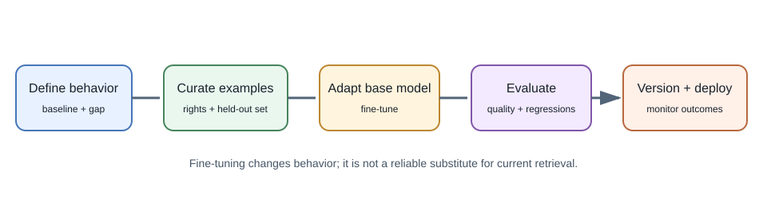
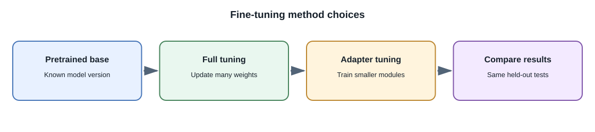

Fine-Tuning¶
Introduction¶
Fine-tuning continues training a pretrained model on a smaller, task-specific dataset. The training updates some or all of the model's parameters so its behavior better matches examples or a desired objective. Many hosted providers offer managed fine-tuning for selected models; local fine-tuning is also possible with suitable hardware and tooling.
Fine-tuning changes model behavior. It is not the same as adding documents to a prompt or retrieving current information at request time.
Why fine-tune?¶
Fine-tuning can help when a model repeatedly needs a specialized style, format, vocabulary, or task behavior and prompting alone is not consistent enough. It can be useful for classification, extraction, or domain-specific response patterns when high-quality examples exist.
It is usually a poor first choice for facts that change frequently, user-specific permissions, or a reference library that needs citations. Use application code or retrieval for those needs.
Fine-tuning workflow¶


- Define measurable behavior that prompting and application logic do not adequately provide.
- Select a base model and verify its supported fine-tuning method, license, and data terms.
- Curate representative input-output examples with permission and remove secrets or unnecessary personal information.
- Split training and evaluation data before tuning; prevent near-duplicate examples from leaking between sets.
- Train an adapted model, often using a provider-managed service or a parameter-efficient method such as Low-Rank Adaptation (LoRA).
- Compare the result against the base model and baseline prompts using the same held-out task set.
- Deploy a versioned model with a rollback plan and monitor failures, latency, and cost.
Data quality and evaluation¶
The training examples demonstrate desired behavior, so incorrect, inconsistent, or unrepresentative samples can teach the wrong pattern. Include diverse realistic inputs, edge cases, refusals where appropriate, and examples of missing information. Keep a separate test set that is not used to select the tuning configuration.
Evaluate the base and fine-tuned model on the same examples. Measure the task outcome, regression cases, safety behavior, and operating cost. A model can improve the preferred style while becoming worse at another capability.
Common tuning approaches¶
- Full fine-tuning: update many or all model parameters. This can require significant compute and storage.
- Parameter-efficient fine-tuning: update a smaller set of parameters or add small trainable components. LoRA is a common example.
- Instruction fine-tuning: train on instruction and response examples to improve instruction-following behavior.
- Preference optimization: use preference signals to change which outputs are favored. Methods and data requirements differ.
Provider interfaces and terminology vary. Do not assume a method available for one model is available for another.
Supervised fine-tuning and preference methods¶
Supervised fine-tuning (SFT) trains on examples of the desired input and output. The examples should cover the real range of input, including ambiguity, missing information, and valid refusal cases. If examples contain one narrow style or only easy cases, the resulting model may overfit that pattern.
LoRA adds trainable low-rank matrices to selected model layers while leaving most base weights fixed. The resulting adapter is smaller than a full copy of updated weights and can be combined with a compatible base model. QLoRA combines quantized base weights with trainable adapters to reduce training memory needs; it still needs compatible hardware and careful evaluation.
Preference optimization uses comparisons or preference signals to encourage favored outputs. RLHF commonly uses human preference data and a reinforcement-learning stage; DPO is one approach that optimizes from preference pairs without the same explicit reinforcement-learning loop. These are training methods, not guarantees of correctness or alignment. Data quality, reward definitions, and held-out testing still matter.
| Method | What is updated or optimized? | Practical trade-off |
|---|---|---|
| SFT | Model behavior from example responses | Straightforward when target examples are clear; sensitive to example quality |
| LoRA / QLoRA | Small adapter parameters with a compatible base model | Lower training memory or artifact size in some setups; runtime and compatibility still matter |
| Preference optimization | Relative preference between candidate outputs | Needs reliable comparisons and checks for unintended reward behavior |
| Full fine-tuning | Broad model parameters | Flexible but resource-intensive and harder to version and serve |
Fine-tuning versus RAG and prompting¶
| Approach | Changes model weights? | Best suited for |
|---|---|---|
| Prompting | No | Instructions, examples, temporary task context |
| RAG | No | Current, private, or cited reference information |
| Fine-tuning | Yes | Repeated behavior or output patterns supported by training examples |
| Training from scratch | Yes, from initialization | Research or a genuinely unique foundation-model effort with substantial resources |
These approaches can be combined, but complexity should be justified by evaluation results.
What does it mean to train a model on specific data?¶
The phrase can refer to several different operations. Identify which one is meant before choosing an approach:
- Pretraining from scratch learns general parameters from a very large corpus. It is not what most application teams mean when they say they want a model to know their documents.
- Continued pretraining or domain-adaptive pretraining continues a language-model objective on domain text, such as permitted technical documents. It can adapt vocabulary or statistical patterns, but does not guarantee reliable recall of an individual fact or provide citations.
- Supervised fine-tuning trains on examples of desired inputs and outputs. It is suited to repeatable task behavior, formats, and response patterns, not a dependable searchable store of changing facts.
- Preference training uses comparisons or preference signals to shape which responses are favored. It does not by itself install a factual database or enforce permissions.
- RAG leaves model weights unchanged and retrieves authorized source passages for each request. It is generally a better fit for changing documents, traceable answers, and user-specific access.
Training a model with a company's or user's data also requires permission to use that data, a suitable training method and model, careful separation of training and evaluation examples, and a plan for updates, deletion, privacy, and regressions. Training examples can influence outputs, but there is no guarantee the model will memorize or reproduce a particular record on demand. Do not use training as an access-control mechanism.
Fine-tune only after collecting a baseline set of failures. For example, if a model can answer correctly when given a document but retrieves an outdated policy, improve retrieval and freshness first. If it repeatedly returns the wrong schema despite valid context and a tested prompt, a behavior-focused tuning experiment may be worth comparing.
Full-stack example¶
A company wants support-ticket classifications in a stable internal taxonomy. First test an existing model with a clear prompt and constrained label schema. If it still makes costly, repeatable errors and a curated authorized dataset is available, fine-tuning may be worth evaluating. The backend must still validate that the returned label is allowed and route low-confidence or high-impact cases for review.
Developer perspective¶
Treat fine-tuning as a model build and deployment pipeline. Version the dataset, training configuration, base model, adapted model, and evaluation results. Check data rights and retention terms before uploading examples to a third-party training service.
Common misconceptions¶
- Fine-tuning does not guarantee exact recall of the examples.
- Fine-tuning is not a reliable way to provide frequently changing knowledge.
- More training examples do not always improve results.
- Fine-tuning does not replace authorization, output validation, or safety testing.